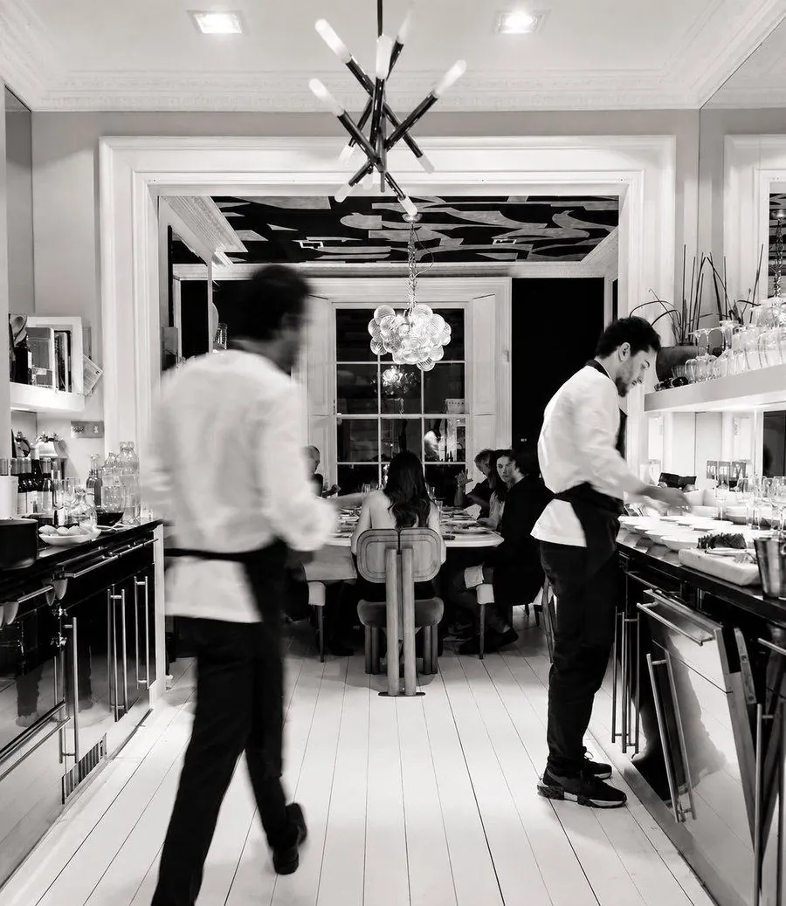
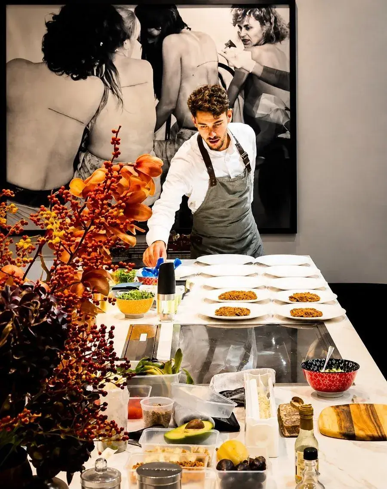

Bespoke Cuisine,
Wherever You Are
Residences · International · Yachts · Private Dining
Bespoke fine dining for private residences, superyachts and international events. Seasonal ingredients, fine-dining technique, and an entirely discreet service.




Born in Spain in 1998.
Trained in kitchens that set the standard.
Alejandro began his career under the guidance of Martín Berasategui (3 Michelin stars), building a strong foundation in fine dining before developing expertise across a wide range of international cuisines. Since 2020, he has worked exclusively with UHNW families, private residences, and superyachts, based in London and available internationally.
Now based in London, Alejandro creates bespoke dining experiences, from daily family meals and intimate dinners with friends to celebrations and private events for hundreds of guests. He leads a trusted team of sous chefs, pastry chefs, bakers, front-of-house professionals, and drinks managers, ensuring every event is delivered with the same exceptional standard of service and attention to detail.
"There is no secret in my kitchen, only passion."
Alejandro Nicolau
One chef and one team, from a dinner for two to a gala for hundreds
Alejandro Nicolau is a private chef based in London who cooks in your own home, on board your yacht and at events across the UK and abroad. Every booking starts with a conversation about your guests, your space and the occasion, and ends with a menu built around them.
You can book him for a dinner party, a family celebration, a corporate event or a week of daily meals, and choose the style of cooking from more than a dozen cuisines. Chefs, bartenders and waiters can be added when the guest list grows, and the kitchen is always left clean. Browse the areas we cook in or send an enquiry and receive a tailored proposal within 24 hours.
A journey around the world,
served on a single plate.
Alejandro's concept: tailoring cuisine to each client's desires by fusing the finest ingredients from different culinary traditions.
Recent dishes


Where Alejandro cooks
London Private Household
Resident chef service for family homes across London, day in, day out.
02Private & Corporate Events
One-off dinners, celebrations and corporate receptions, planned end to end.
03Gala Dinners
High-end receptions for private clients and luxury brands.
04International
Travel to any destination with team, menu and logistics fully coordinated.
05Yachts & Superyachts
Onboard chef across the Mediterranean and the Caribbean, with daily menus adapted to each voyage.
06Cocktail & Bar Service
Bespoke bar setup and drinks menus, personalised for your event.
From enquiry to the table
Enquiry
Tell us the date, place, guest count and any dietary needs.
Menu proposal
Alejandro designs a menu around your tastes, with options to choose from.
Confirmation
Date, shopping, equipment and team are agreed in advance.
The event
He cooks, serves and leaves the kitchen clean. You enjoy the evening.
What guests say after tasting his cooking
Cooking for the season’s big dates
From Halloween to Christmas and New Year, book early for the dates everyone wants.
Halloween
Dark, seasonal and properly delicious
26 Nov 2026Thanksgiving
Turkey, stuffing and no stress
December 2026Christmas Party
Festive parties without the kitchen chaos
25 Dec 2026Christmas Day
Christmas lunch, cooked for you
31 Dec 2026New Year's Eve
Ring in the year at your own table
14 Feb 2027Valentine's Day
Dinner for two, without leaving home
Private chef London: FAQs
A private chef plans the menu with you, shops for the ingredients, cooks in your own kitchen, serves the meal and leaves the kitchen clean. Alejandro Nicolau can do this for a single dinner, a party, an event for hundreds or a week of daily meals.
As early as you can, especially for Christmas, New Year's Eve and weekends in summer. For quieter dates a few weeks is often enough. Send your date and guest count through the enquiry form and you will hear back within 24 hours.
In private homes and venues across London, the Home Counties and the rest of the UK, on yachts, and at international events. See the locations page for the areas covered.
Yes. Allergies, vegetarian, vegan, halal-friendly and kosher-style requirements are planned into the menu from the first conversation. Halal-friendly and kosher-style are not certified services.
Yes. Sous chefs, waiters and bartenders can be added to match your guest list, and the team brings the equipment the menu needs.